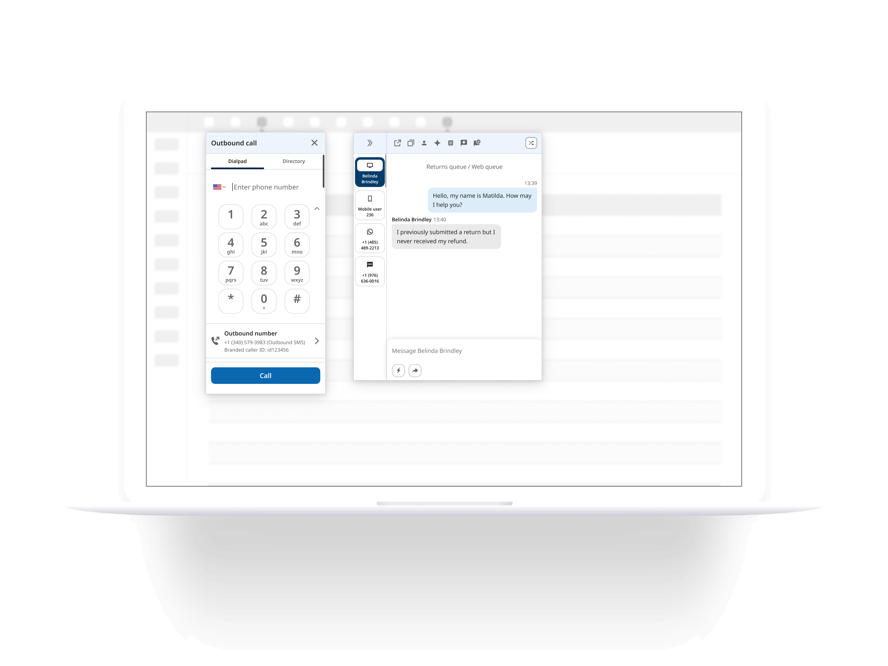
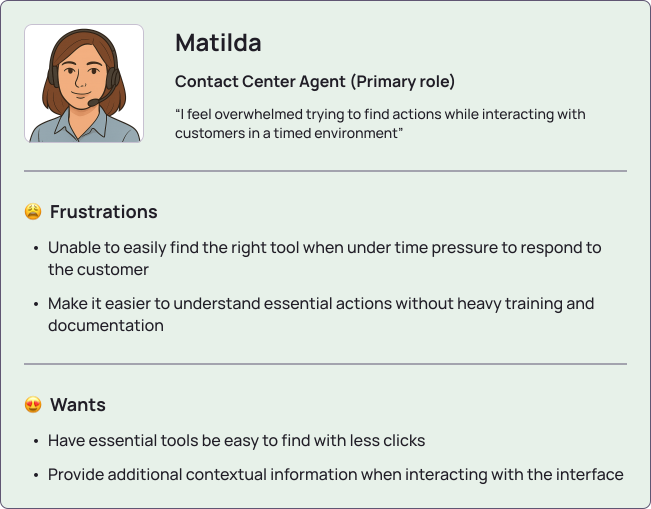
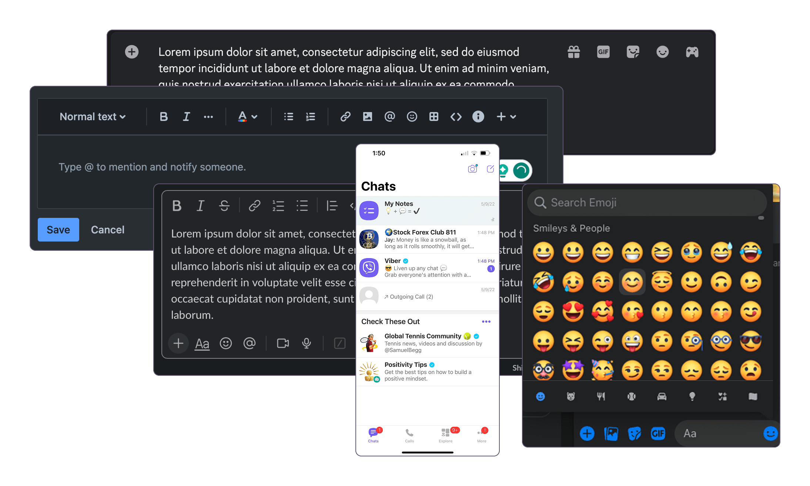
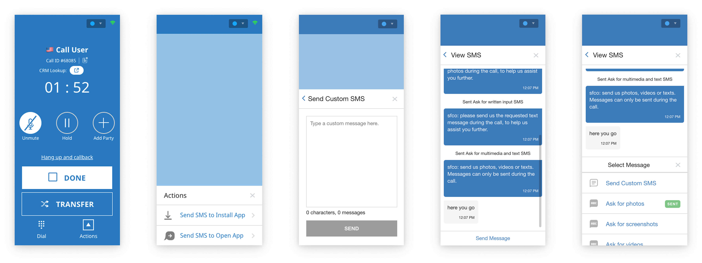

The legacy Chat platform had been extended with features over time, but without a cohesive strategy. This resulted in a cluttered, inefficient interface that made agent workflows slow and frustrating. It became clear that a full rethinking was necessary, not just a visual update but a structural one focused on unifying features and improving scalability for future enhancements.
Redesign the Chat experience and structure that prioritizes agent efficiency to easily navigate between chats and interact with customers.
This was my first project as the lead with minimal supervision. Due to budget and time constraints, I could not perform a full discovery and research process. The product manager handled general discovery and shared their insights with me. In a personal effort to understand the users, I created a user persona from existing knowledge and shared insights.

Along with internal insight, users were providing feedback on the old design via G2, a B2B software and services review platform.
"The current UI design appears to be rather basic and requires a redesign to enhance aesthetics and usability."
- User in Enterprise (7/21/2023)
"The UI design is kinda basic and needs a bit of new design, also if it can get a little bit more optimization for mobile and iOS devices will be nice along with an app control."
- Technical Support (8/29/2022)
A fast-paced environment pushed a need a for all essential tools to be immediately accessible. Agents had difficulty finding the right tools efficiently. This posed a question on how to balance availability and maintaining a clean interface.
With a tool overload already in place, I needed to accommodate new features. The design needed to be scalable for ongoing growth without overwhelming users.

The current chat app design
In order to redesign a product, I needed to understand all of its features and capabilities. I analyzed the existing user flows on the live product. Then I had conversations with product managers and engineers to get a deeper understanding of behaviors and the why they made these decisions.
Since I didn't have experience designing a full chat messaging app, I performed an indirect competitive analysis of other communication apps with chat messaging. I attempted to perform a direct competitive audit but couldn't access those products with my limited capabilities. I researched apps like Slack, Discord, Jira, iOS, Android, Whatsapp, Viber, Telegram, Meta, and Google. I took note and captured behaviors to find common patterns between the communication apps. This also helped me keep updated on trends to modernize the product.

Closely collaborating with the Product Manager, I questioned which features were most frequently used and prioritized by agents (the primary users). We identified these features and reserved their placement in the newly introduced in-chat toolbar. Previously these actions were located in the chat side navigation and were hidden under a menu. I believed this made it easier for agents to quickly find and initiate actions.
Another major improvement was restructuring the navigation to only use it as a navigational tool and provide real-time data (response timer) on chat sessions. Relocating essential actions provided ample room for future enhancements and simplified the chat workflow. Many chats won't have a customer's name attached to the session and it may only say "Chat User 21." To help distinguish chat sessions, I introduced a channel type icon to make it easier to locate chats at a glance.

Two major enhancements were introduced:
Foreseeing future growth, I realized the current chat input wouldn't properly support these enhancements. To support these changes, I redesigned the Chat Input UI and introduced a secondary toolbar. This allowed us to add features without crowding the main input area, maintaining a clean interface while preparing for future expansion. These updates were implemented across both the Web and Mobile apps, ensuring a consistent experience across platforms.

The Voice/IVR system is the most feature-rich and complex product in the suite. It also required a redesign and UX improvements. While my UI Director led this project, I contributed to design system implementation and maintained consistency with the rest of the platform ecosystem.

The current call app design
I supported the integration of the new design system governance into the voice/call app and aligned key interaction patterns and visual language from our mobile app to ensure consistency across features. With ongoing feature enhancement, I led a few key projects to continue improving the Voice/Call app.

A customer encountered issues when dialing international numbers without entering the country code. Calling would end with errors or it would automatically input the wrong country code from settings. To solve this, I introduced a country code selector that recognized and auto-filled country codes even when typed manually. This improved both flexibility and efficiency.
Additionally, I consolidated a two-step dialing flow into a single screen, simplifying the experience based on user feedback. While a dial pad was used by only a small number of agents, I added a toggle to show or hide it based on user preference. Admins were given the ability to set default behaviors for their teams, allowing for greater customization and control.

Due to the fast-paced startup environment, I don't have numerical metrics for the impact of the chat and voice redesigns. However, I have pulled quotes from user reviews on G2, a B2B software and services review platform.

"I love how it's easy to use. This gives me a light work. Especially during live chat and call. Amount of feautures is not overwhelming so it's easy for me to use it and did not give me hard time using it. As customer support it's important to have an easy tools for us to work efficiently."
- Customer Service Representative (5/26/2024)
"The platform’s modern, clean interface makes it easy for agents to navigate and manage customer interactions efficiently, reducing training time and improving productivity."
- Verified User in Consumer Services (6/25/2025)
"What I like the best about [...] still remain great. I was really amaze and impress on how this tool very ease to use and easy to navigate. It's user-interface easy to understand even though the beginner whose using it is able to perform the job effectively."
- Customer Service Advocate (2/1/2024)
"Easy to use and navigation is user friendly. I'm getting used to it and it really helps a lot in evreything I do. As a contact support, I can handle and help resolve customer's concern. I alwasy check and inspect all it's features evrytime I use it."
- Contact Support (7/26/2024)

An omnichannel and multi-platform design system for a CCaaS B2B startup

Product UX/UI of a multi-channel mobile app for a CCaaS B2B startup

Product UX/UI of an email channel web app for a CCaaS B2B startup

Product UX/UI of a multi-channel desktop app for a CCaaS B2B startup